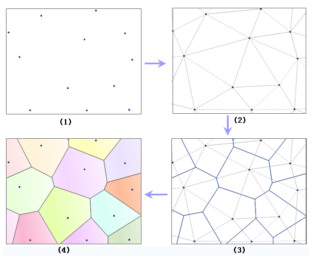

com.supermap.android.spatialAnalyst.DatasetThiessenAnalystService
com.supermap.android.spatialAnalyst.DatasetThiessenAnalystService
|
|||||||||
| 上一个类 下一个类 | 无框架 | ||||||||
| 摘要： 嵌套 | 字段 | 构造方法 | 方法 | 详细信息： 字段 | 构造方法 | 方法 | ||||||||
java.lang.Object
public class DatasetThiessenAnalystService
数据集邻近分析服务类。
该类负责将客户设置的数据集邻近分析服务参数传递给服务端，并接收服务端返回的数据集邻近分析结果数据。
邻近分析是 GIS 领域里一个最为基础的分析功能之一，邻近分析是用来发现事物之间的某种邻近关系。 进行邻近分析的方法是实现泰森多边形的建立，即根据所提供的点数据建立泰森多边形，从而获得点之间的邻近关系。 泰森多边形的建立如下所示：

1.对待建立泰森多边形的点数据进行由左向右，由上到下的扫描，如果某个点距离之前刚刚扫描过的点的距离小于给定的邻近容限值，那么分析时将忽略该点；
2.基于扫描检查后符合要求的所有点建立不规则三角网，即构建 Delaunay 三角网；
3.画出每个三角形边的中垂线，由这些中垂线构成泰森多边形的边，而中垂线的交点是相应的泰森多边形的顶点；
4.用于建立泰森多边形的点的点位将成为相应的泰森多边形的锚点。
以上建立的泰森多边形有如下特点：
1.每个泰森多边形内仅含有一个离散点数据；
2.泰森多边形内的点到相应离散点的距离最近；
3.位于泰森多边形边上的点到其两边的离散点的距离相等。
泰森多边形可用于定性分析、统计分析、邻近分析等。例如，可以用离散点的性质来描述泰森多边形区域的性质；可用离散点的数据来计算泰森多边形区域的数据；判断一个离散点与其它哪些离散点相邻时，可根据泰森多边形直接得出，且若泰森多边形是n边形，则就与n个离散点相邻；当某一数据点落入某一泰森多边形中时，它与相应的离散点最邻近，无需计算距离。
| 嵌套类摘要 | |
|---|---|
static class |
DatasetThiessenAnalystService.DatasetThiessenAnalystEventListener处理数据集邻近区分析结果的监听器抽象类。 |
| 构造方法摘要 | |
|---|---|
DatasetThiessenAnalystService(java.lang.String url)构造函数。 |
|
| 方法摘要 | |
|---|---|
ThiessenAnalystResult |
getLastResult()返回数据集邻近区分析结果。 |
void |
process(DatasetThiessenAnalystParameters params, DatasetThiessenAnalystService.DatasetThiessenAnalystEventListener listener)根据数据集邻近区与服务端完成异步通讯，即发送分析参数，并通过实现DatasetThiessenAnalystEventListener监听器处理分析结果。 |
void |
setTimeout(int timeout)用户自定义超时时间。 |
| 从类 java.lang.Object 继承的方法 |
|---|
clone, equals, finalize, getClass, hashCode, notify, notifyAll, toString, wait, wait, wait |
| 构造方法详细信息 |
|---|
public DatasetThiessenAnalystService(java.lang.String url)
构造函数。
url - 数据集邻近区分析服务地址。如 http://ServerIP:8090/iserver/services/spatialanalyst-sample/restjsr/spatialanalyst| 方法详细信息 |
|---|
public void process(DatasetThiessenAnalystParameters params,
DatasetThiessenAnalystService.DatasetThiessenAnalystEventListener listener)
根据数据集邻近区与服务端完成异步通讯，即发送分析参数，并通过实现DatasetThiessenAnalystEventListener监听器处理分析结果。
params - 数据集邻近区参数信息。listener - 处理分析结果的DatasetThiessenAnalystEventListener监听器。public void setTimeout(int timeout)
用户自定义超时时间。
timeout - 用户自定义超时时间。若用户不设置，则使用默认超时间为5秒。0代表无限，即代表不设置超时限制。单位默认为秒。public ThiessenAnalystResult getLastResult()
返回数据集邻近区分析结果。
|
|||||||||
| 上一个类 下一个类 | 无框架 | ||||||||
| 摘要： 嵌套 | 字段 | 构造方法 | 方法 | 详细信息： 字段 | 构造方法 | 方法 | ||||||||